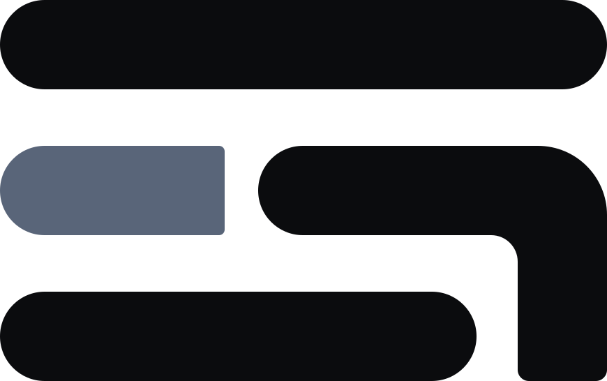

序引海图
Sequentry Atlas
打开导航 →
序引海图
/
全球开店
/
非洲
非洲出海开店平台
增长型市场：Jumia 等平台与本地支付、物流网络仍在快速演进。
3 个平台 · 官方入驻 / 卖家后台直达
Jumia
jumia.com
非洲最大综合平台。
站点
Takealot
takealot.com
南非第一。
入驻
Kilimall
kilimall.co.ke
东非（肯尼亚）领先平台。
站点
其他市场
热门跨境平台
北美
欧洲
英国
日本 / 韩国
东南亚
拉美
中东
俄罗斯 / 独联体
南亚 / 印度
B2B / 批发